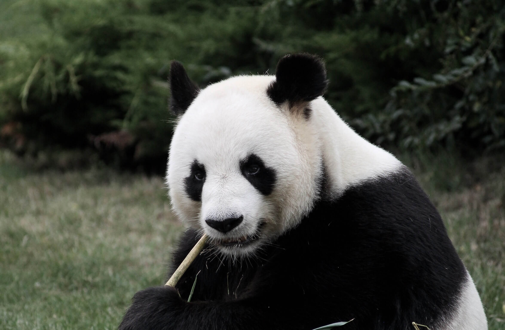

The Giant Panda (Credits)
Amazing Facts About the Giant Panda
Giant pandas have a bear like appearance. Their distinctive black and white colouring makes them one of the best-known species in the world. They can reach 6 ft (1.9 m) in height and in the wild weigh around 220–250 lb (110–115 kg), although adult males can weigh up to 350 lbs (160 kg).
Why are giant pandas black and white? The reason behind the black and white coat is unknown, but it is thought that the colouring provides camouflage for giant pandas in their natural environment.
Where do giant pandas live?
Giant pandas live in bamboo forests in remote mountainous regions of western China. The majority can be found in Sichuan province but they also inhabit areas in the neighbouring provinces of Shaanxi and Gansu.
The cool wet environment provides the perfect habitat for giant pandas that feed almost exclusively on bamboo.
How have giant pandas adapted to living in trees?
Giant pandas have broad paws with furry undersides and long retractile claws that help them grip when climbing trees..
What do giant pandas eat?
Giant pandas are omnivores, which means their diet consists of both vegetation and meat. However, bamboo is by far their favourite food.
Bamboo is low in nutrients so giant pandas need to eat a lot to survive. In a single day, they can spend 12 to 16 hours eating, consuming up to 44 lb (20 kg) of bamboo. Shoots, when available, are eaten first as they have the most nutrients, followed by leaves and stems.
How have giant pandas adapted to eating bamboo?
Giant pandas have an extra digit on their paws that functions like a thumb and helps them to tear bamboo. Strong jaws enable them to crush bamboo up to 1.6 in (4 cm) in diameter, and their molar and pre-molar teeth are adapted to slice and crush tough plant stems. Adaptation doesn’t stop there though, as giant pandas throats have a special lining to protect it from splinters once the bamboo is swallowed.
Are giant pandas social animals?
Giant pandas are shy animals that prefer to live alone. Using their heightened sense of smell, giant pandas detect the scent of other giant pandas close by and avoid them. The only exception is during the breeding season (March to May) when males use their sense of smell to locate females.
How do giant pandas mark their territory?
Giant panda tails, which are between 4–6 in (10–15 cm) in length, are the second longest of all species in the bear family. They are fluffy but have a fur free area at the root with scent glands. Scent is excreted from these glands and the brush like tail is used to spread the scent and mark territories.
Where do giant pandas sleep?
With few natural predators to be afraid of, giant pandas are not picky when it comes to sleeping locations. They will fall on asleep on the forest floor, cosying up next to a tree or balancing on a branch. Much of their time is spent eating, so giant pandas sleep for only 2–4 hours at a time.
Do giant pandas hibernate?
Unlike other bears, giant pandas do no hibernate during winter months, but instead may migrate short distances to lower elevations. The simple answer as to why pandas don’t hibernate is that they cannot stop eating. The low nutritional value of bamboo prevents them from building fat reserves to last them through the winter.